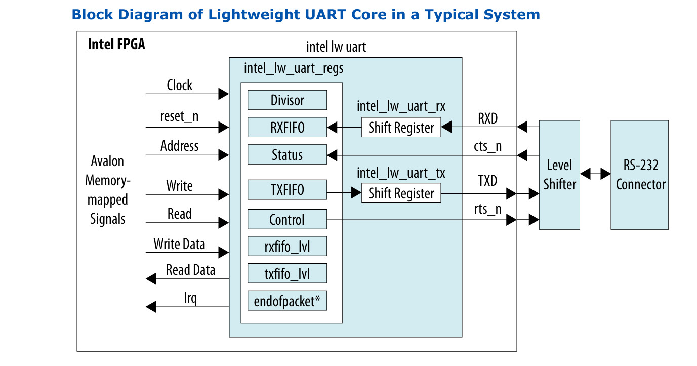
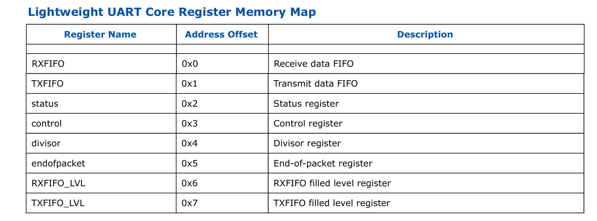
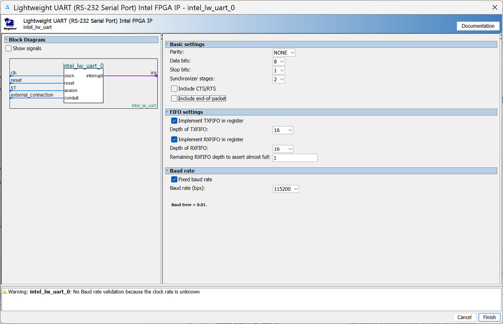
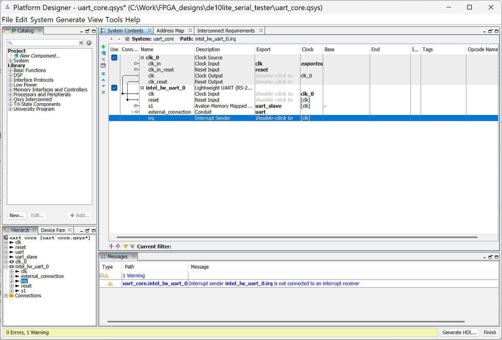
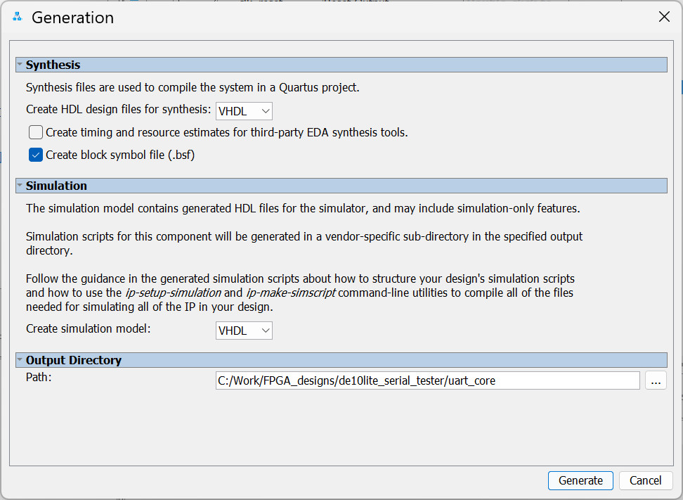
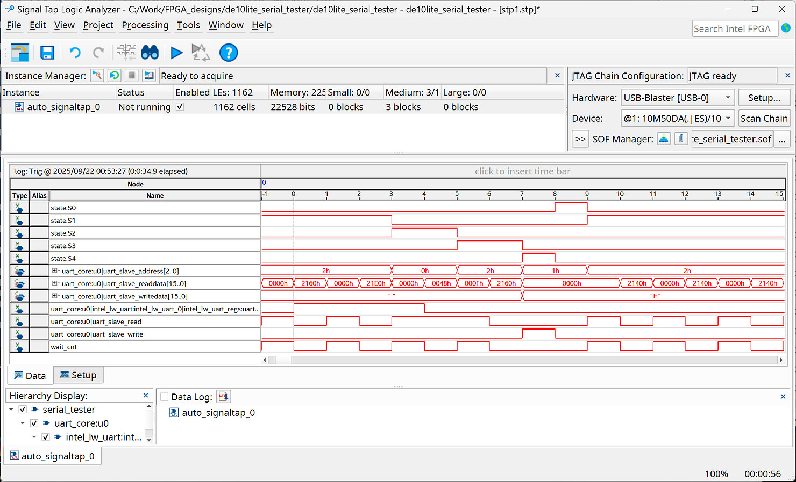

Tutorial: Quartus Prime UART Core Lite#
- Intel/Altera IP Cores for Serial Communication
- Lightweight UART Core Instantiation
- Serial-Loopback Test
Intel/Altera IP Cores for Serial Communication#
Quartus Prime software provides a set of free IP cores for FPGA designs targeting Intel / Altera FPGA devices. For serial data communication, some UART IP cores are available such as RS232-UART Core (Intel FPGA IP), Intel FPGA 16550 Compatible UART Core, UART Core, Lightweight UART Core and JTAG-UART Core.
This tutorial explains how to use the Lightweight UART Core. The figure below shows a simplified block diagram of the Lightweight UART Core. This core uses the Avalon bus memory-mapped interface, and there is a small set of 16-bit readable and writable registers associated with the operation of the UART core.

Figure: Block diagram of the Lightweight UART Core (Source: Intel / Altera)

Figure: Registers of the Lightweight UART Core (Source: Intel / Altera)
For more details, please consult the "Embedded Peripherals IP User Guide".
Lightweight UART Core Instantiation#
This section provides a guideline for using the Lightweight UART Core:
- Open Quartus Prime, create a new FPGA project using the "New Project Wizard".
- Go to the menu "Tools > Platform Designer" to start the Platform Designer tool.
- Add the Lightweight UART Core to the System Contents. Select the IP core from "Library > Interface Protocols > Serial > Lightweight UART (RS232 Serial Port)".
- Configure the IP core:
- Basic Settings:
- Use 8N1 (8-bit data, no parity, 1 stop bit)
- Include CTS/RTS (flow control): No
- Include end-of-packet: No
- FIFO Settings:
- Implement TXFIFO in register: Yes
- Implement RXFIFO in register: Yes
- Select the FIFO depth for TX and RX FIFOs
- Baud rate: 115200 (use fixed baud rate)
- Basic Settings:
- Export and rename the selected UART signals, then connect the clock and reset signals for the components as shown in the wiring diagram below.
- Click the "Generate HDL" button to generate code for the IP core. Choose VHDL as the output type and specify the output directory for the IP core files.
- Save the Platform Designer project (
.qsys). After generating the IP core, add the.qsysto the project. - Instantiate the Lightweight UART core in your top-level design.

Figure: UART IP core settings

Figure: IP core configuration

Figure: Generating the IP core and saving the IP core settings to a .qsys file
Serial-Loopback Test#
Below is a top-level design written in VHDL, provided as an example showing how to implement an FSM to interface with the UART core according to the Avalon memory-mapped interface.
The FSM starts with a polling read operation to check whether
the RXFIFO is not empty. It reads the STATUS register of the IP core
and checks the "Receive character ready" (RRDY) bit. If it is set,
the FSM reads the RXFIFO register and extracts the data byte from the 16-bit value.
Next, the FSM performs a polling read operation on the STATUS register
to check whether the "TX data empty" bit (TMT) is set.
If the transmit data register is empty,
the data byte is written as a 16-bit value to the TXFIFO register,
enabling a serial-loopback test behavior.
LIBRARY ieee;
USE ieee.std_logic_1164.ALL;
USE ieee.numeric_std.ALL;
ENTITY serial_tester IS
PORT (
CLK : IN STD_LOGIC; -- system clock
RESET_N : IN STD_LOGIC; -- active-low reset
UART_RXD : IN STD_LOGIC; -- UART RXD
UART_TXD : OUT STD_LOGIC; -- UART TXD
LEDS : OUT STD_LOGIC_VECTOR(7 DOWNTO 0) -- LED indicators
);
END ENTITY;
ARCHITECTURE rtl OF serial_tester IS
-- Component Declaration of uart_core
COMPONENT uart_core IS
PORT (
clk_clk : IN STD_LOGIC;
reset_reset_n : IN STD_LOGIC;
uart_slave_address : IN STD_LOGIC_VECTOR(2 DOWNTO 0);
uart_slave_read : IN STD_LOGIC;
uart_slave_write : IN STD_LOGIC;
uart_slave_writedata : IN STD_LOGIC_VECTOR(15 DOWNTO 0);
uart_slave_readdata : OUT STD_LOGIC_VECTOR(15 DOWNTO 0);
uart_rxd : IN STD_LOGIC;
uart_txd : OUT STD_LOGIC
);
END COMPONENT;
-- UART slave signals
SIGNAL uart_addr : STD_LOGIC_VECTOR(2 DOWNTO 0) := (OTHERS => '0');
SIGNAL uart_read : STD_LOGIC := '0';
SIGNAL uart_write : STD_LOGIC := '0';
SIGNAL uart_wdata : STD_LOGIC_VECTOR(15 DOWNTO 0) := (OTHERS => '0');
SIGNAL uart_rdata : STD_LOGIC_VECTOR(15 DOWNTO 0) := (OTHERS => '0');
SIGNAL data_byte : STD_LOGIC_VECTOR( 7 DOWNTO 0) := (OTHERS => '0');
CONSTANT RXFIFO_REG : STD_LOGIC_VECTOR(2 DOWNTO 0) := "000";
CONSTANT TXFIFO_REG : STD_LOGIC_VECTOR(2 DOWNTO 0) := "001";
CONSTANT STATUS_REG : STD_LOGIC_VECTOR(2 DOWNTO 0) := "010";
TYPE state_type IS (S0, S1, S2, S3, S4);
SIGNAL state : state_type := S0;
SIGNAL wait_cnt : INTEGER RANGE 0 TO 1 := 0;
BEGIN
-- Instantiate UART Core
u0 : uart_core
PORT MAP(
clk_clk => CLK,
reset_reset_n => RESET_N,
uart_slave_address => uart_addr,
uart_slave_read => uart_read,
uart_slave_write => uart_write,
uart_slave_writedata => uart_wdata,
uart_slave_readdata => uart_rdata,
uart_rxd => UART_RXD,
uart_txd => UART_TXD
);
PROCESS (CLK, RESET_N)
BEGIN
IF RESET_N = '0' THEN
state <= S0;
uart_read <= '0';
uart_write <= '0';
uart_addr <= (OTHERS => '0');
uart_wdata <= (OTHERS => '0');
data_byte <= (OTHERS => '0');
wait_cnt <= 0;
ELSIF rising_edge(CLK) THEN
CASE state IS
WHEN S0 =>
uart_read <= '1';
uart_addr <= STATUS_REG;
wait_cnt <= 1;
state <= S1;
WHEN S1 =>
uart_read <= '0';
IF wait_cnt = 0 THEN
IF uart_rdata(7) = '1' THEN -- RX FIFO not empty
uart_read <= '1';
uart_addr <= RXFIFO_REG;
wait_cnt <= 1;
state <= S2;
ELSE
uart_read <= '1';
uart_addr <= STATUS_REG;
wait_cnt <= 1;
state <= S1;
END IF;
ELSE
wait_cnt <= wait_cnt - 1;
END IF;
WHEN S2 =>
IF wait_cnt = 0 THEN
data_byte <= uart_rdata(7 DOWNTO 0);
uart_read <= '1';
uart_addr <= STATUS_REG;
wait_cnt <= 1;
state <= S3;
ELSE
wait_cnt <= wait_cnt - 1;
END IF;
WHEN S3 =>
uart_read <= '0';
IF wait_cnt = 0 THEN
IF uart_rdata(5) = '1' THEN -- Transmit data empty
uart_addr <= TXFIFO_REG;
uart_wdata <= x"00" & data_byte;
uart_write <= '1';
state <= S4;
ELSE
uart_addr <= STATUS_REG;
uart_read <= '1';
state <= S3;
wait_cnt <= 1;
END IF;
ELSE
wait_cnt <= wait_cnt - 1;
END IF;
WHEN S4 =>
uart_write <= '0';
uart_write <= '0';
state <= S0;
WHEN OTHERS =>
state <= S0;
END CASE;
END IF;
END PROCESS;
LEDS(7 DOWNTO 0) <= data_byte;
END ARCHITECTURE;
The Tcl script for FPGA pin assignment (for the DE10-Lite FPGA board) is given as an example below.
#set_global_assignment -name DEVICE 10M50DAF484C7G
#set_global_assignment -name FAMILY "MAX 10"
set_instance_assignment -name IO_STANDARD "3.3-V LVTTL" -to CLK
set_instance_assignment -name IO_STANDARD "3.3 V Schmitt Trigger" -to RESET_N
set_location_assignment PIN_P11 -to CLK
set_location_assignment PIN_B8 -to RESET_N
set_instance_assignment -name IO_STANDARD "3.3-V LVTTL" -to UART_RXD
set_instance_assignment -name IO_STANDARD "3.3-V LVTTL" -to UART_TXD
set_location_assignment PIN_V5 -to UART_RXD
set_location_assignment PIN_W7 -to UART_TXD
set_instance_assignment -name IO_STANDARD "3.3-V LVTTL" -to LEDS[0]
set_instance_assignment -name IO_STANDARD "3.3-V LVTTL" -to LEDS[1]
set_instance_assignment -name IO_STANDARD "3.3-V LVTTL" -to LEDS[2]
set_instance_assignment -name IO_STANDARD "3.3-V LVTTL" -to LEDS[3]
set_instance_assignment -name IO_STANDARD "3.3-V LVTTL" -to LEDS[4]
set_instance_assignment -name IO_STANDARD "3.3-V LVTTL" -to LEDS[5]
set_instance_assignment -name IO_STANDARD "3.3-V LVTTL" -to LEDS[6]
set_instance_assignment -name IO_STANDARD "3.3-V LVTTL" -to LEDS[7]
set_location_assignment PIN_A8 -to LEDS[0]
set_location_assignment PIN_A9 -to LEDS[1]
set_location_assignment PIN_A10 -to LEDS[2]
set_location_assignment PIN_B10 -to LEDS[3]
set_location_assignment PIN_D13 -to LEDS[4]
set_location_assignment PIN_C13 -to LEDS[5]
set_location_assignment PIN_E14 -to LEDS[6]
set_location_assignment PIN_D14 -to LEDS[7]
The following Python is provided for serial-loopback test.
import serial
import time
# Configure and open the serial port
ser = serial.Serial(
port="COM13", # specify the serial port (e.g. 'COM13' on Windows)
baudrate=115200, # set the baud rate
timeout=0.1, # set serial timeout (in seconds) for reading data
)
print(f"Opened {ser.portstr}")
try:
cnt = 0
recv_str = ""
while True:
msg = f"Hello World! ({cnt})\r\n"
ser.write( msg.encode('utf-8')) # write a string to serial
incoming = ser.readline() # read a string line from serial
if incoming:
recv_str = incoming.decode("utf-8", errors="replace")
print(f"Received message: {recv_str}", end="")
cnt = cnt + 1 # increment the counter
time.sleep(0.1)
except KeyboardInterrupt:
print("\nTerminated...")
finally:
if ser:
ser.close()
print("Serial port closed.")
To test the FPGA design with the DE10 Lite FPGA board, a USB-to-serial adapter (3.3V logic level) is required.
In addition, it is recommended to use the Signal Tap Logic Analyzer to capture and analyze selected internal signals of the design to gain a better understanding of the circuit’s operation.

Figure: Using Signal Tap Logic Analyzer to analyze the design.
This work is licensed under a Creative Commons Attribution-ShareAlike 4.0 International License.
Created: 2025-09-22 | Last Updated: 2025-09-23